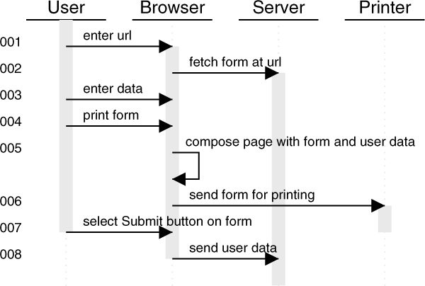

XHTML-Print - Second Edition
W3C Recommendation 23 November 2010
- This version:
- http://www.w3.org/TR/2010/REC-xhtml-print-20101123/
- Latest version:
- http://www.w3.org/TR/xhtml-print
- Previous version:
- http://www.w3.org/TR/2010/PER-xhtml-print-20101007/
- Diff-marked from previous version:
- xhtml-print-diff.html
- Previous recommendation:
- http://www.w3.org/TR/2006/REC-xhtml-print-20060920/
- Diff-marked from previous recommendation:
- xhtml-print-rec-diff.html
- Editor:
- Shane McCarron, Applied Testing and Technology, Inc. shane@aptest.com
- Version 1.0 Editors:
- Melinda Grant, Hewlett-Packard Co.
- Jim Bigelow, Hewlett-Packard Co.
Please refer to the errata for this document, which may include some normative corrections. See
also translations.
This document is also available in these non-normative formats: PostScript version, PDF
version, ZIP archive, and Gzip'd TAR archive.
See also translations.
Copyright © 2006-2010
W3C® (MIT, ERCIM, Keio), All Rights Reserved. W3C liability, trademark and document use rules apply.
Abstract
XHTML-Print is a member of the family of XHTML languages defined by the Modularization of XHTML [XHTMLMOD]. It is designed to be appropriate for printing from mobile devices to low-cost printers that might not have a full-page buffer and that generally print from
top-to-bottom and left-to-right with the paper in a portrait orientation. XHTML-Print is also targeted at printing in environments where it is not feasible or desirable to install a printer-specific
driver and where some variability in the formatting of the output is acceptable.
Status of This Document
This section describes the status of this document at the time of its publication. Other documents may supersede this document. A list of current W3C publications and the latest revision of
this technical report can be found in the W3C technical reports index at http://www.w3.org/TR/.
All sections of this document are normative unless noted as informative.
This document is a Recommendation of XHTML Print. It supercedes the previous version. The only substantive changes in this version
are the addition of an implementation of the markup language using XML Schema.
This document has been reviewed by W3C Members, by software developers, and by other W3C groups and interested parties, and is endorsed by the Director as a W3C Recommendation. It is a stable
document and may be used as reference material or cited from another document. W3C's role in making the Recommendation is to draw attention to the specification and to promote its widespread
deployment. This enhances the functionality and interoperability of the Web.
This document incorporates minor suggestions made during the XHTML-Print Proposed Recommendation of 31 January 2006 and also
removes any requirement for CSS support; please see the public disposition of comments for details. Evidence of interoperability
between two implementations of this specification is documented in the Implementation Report.
This document has been produced by the W3C XHTML2
Working Group as part of the W3C HTML
Activity.
This document is governed by the 24 January 2002 CPP as amended by the
W3C Patent Policy Transition Procedure. W3C maintains a public list of any patent disclosures made in connection with
the deliverables of the group; that page also includes instructions for disclosing a patent. An individual who has actual knowledge of a patent which the individual believes contains Essential Claim(s) must disclose the information in accordance with section 6 of the W3C Patent Policy.
Please report errors in this document to www-html-editor@w3.org (archive).
Table of Contents
1. Introduction
All sections of this document are normative unless noted as informative.
1.1. XHTML for Printing
This section is informative.
This document specifies a simple XHTML based data stream suitable for printing as well as display. It is based on XHTML Basic [XHTMLBASIC]. Its targeted
usage is for printing in environments where it is not feasible or desirable to install a printer-specific driver and where some variability in the formatting of the output is acceptable. Throughout
this document this data stream is called "XHTML-Print."
XHTML-Print is designed to be appropriate for low-cost printers that might not have a full-page buffer and that generally print from top-to-bottom and left-to-right with the paper in a portrait
orientation. For other printers (i.e., those that print in another direction or orientation) a full-page buffer could be needed.
XHTML-Print is not appropriate when strict layout consistency and repeatability across printers are needed. The design objective of XHTML-Print is to provide a relatively simple, broadly
supportable page description format where content preservation and reproduction are the goal, i.e. "Content is King." Traditional printer page description formats such as PostScript or PCL are more
suitable when strict layout control is needed. XHTML-Print does not utilize bi-directional communications with the printer either for capabilities or status inquiries.
This document creates a set of conformance criteria for XHTML-Print. It provides a strong basis for consistent printing results without a detailed understanding of each individual printer's
characteristics.
The document type definition for XHTML-Print is implemented based on the
XHTML modules defined in Modularization of XHTML [XHTMLMOD].
1.2. Terminology
The keywords "MUST", "SHALL", "MUST NOT", "SHALL NOT", "REQUIRED", "SHOULD", "SHOULD NOT", "RECOMMENDED", "MAY", and "OPTIONAL" when used in this document
are to be interpreted as described in RFC 2119 [RFC2119]. However, for readability, these words might not appear in all uppercase letters in this
specification.
1.3. Design Rationale
This section explains why certain HTML features are not part of XHTML-Print
and any special circumstances concerning a module and printing.
1.3.1. Script and Events
Scripts, as programs that are executed in conjunction with a document, are not relevant to the printed page. However, documents can provide information as an alternative to a script. Therefore,
the script module is part of XHTML-Print. Scripts MUST NOT be executed and their results MUST NOT be printed. If a noscript element is present, it contains alternate content that MUST be printed in
place of the content of the script element.
Events are not applicable to static, printed versions of a document. Therefore, the Intrinsic Events module is not part of XHTML-Print.
1.3.2. Presentation
Many simple printers cannot print a wider variety of fonts than generic serif, sans serif and monospace. It is RECOMMENDED that
style sheets be used to create a presentation that is appropriate for a particular category of printer. How printers are categorized, what those categories are, how a printer identifies itself as a
member of a category, and how style sheets are selectively applied based on category, is outside the scope of this document.
The Presentation module ([XHTMLMOD], section 5.4.1) is supported to
provide simple control over basic font variants and rules.
1.3.3. Forms
Basic XHTML forms ([XHTMLMOD], section 5.5.1) are supported. Content developers SHOULD keep in mind that users might not be able to input
many characters from some devices (e.g. from a mobile phone). Furthermore, developers are cautioned that a printer prints a static version of a form,
and the visual appearance of a form depends heavily on the implementation.
1.3.4. Tables
Basic XHTML tables ([XHTMLMOD], section 5.6.1) are supported, but tables can be difficult to format on very low resource devices. Furthermore, content developers are cautioned that in the Basic Tables
Module, nesting of tables is prohibited.
1.3.5. Frames
Frames are not supported. Frames depend on a screen interface and therefore are not applicable to printers.
1.3.6. Attributes
XHTML-Print is a member of the family of XHTML languages defined by Modularization of XHTML [XHTMLMOD]. Therefore, the elements and attributes in the modules that make up XHTML-Print are all valid
constructs of the language. However, not all the attributes are applicable to a rendering of an XHTML-Print document in printed media, especially those that are integral to a dynamic display of the
document in a browser and the submission of a form. Furthermore, special attention is given to simple printers and some attributes are deemed too complex for a such a printer to render. These
attributes are treated as discretionary in that a conforming printer is not REQUIRED to support them, but if a printer wishes to provide
that support, there are requirements stated for consistency in the implementation of extensions.
1.3.7 Character Model
The W3C architectural specification Character Model for the World Wide Web 1.0 [CHARMOD] gives the RECOMMENDED representation of characters in XHTML-Print. Authors of XHTML-Print producing applications should be aware that low cost printers might be limited in both processing power
and memory and therefore, that normalized utf-8 encoded documents could print more quickly than documents in other forms and encodings.
2.1. Document Conformance
A conforming XHTML-Print document is a document that requires only the facilities described as mandatory in this specification. Such a document SHALL meet all of the following criteria:
- The document SHALL conform to the constraints expressed in the DTD found in Appendix B and the XML Schema found in
Appendix B and conform to the constraints expressed in Design Rationale.
- The root element of the document MUST be
html.
- The name of the default namespace on the root element SHALL be the XHTML namespace name,
http://www.w3.org/1999/xhtml.
The start tag MAY also contain the declaration of the XML Schema Instance Namespace and an XML Schema Instance schemaLocation
attribute [XMLSCHEMA]. Such an attribute would associate the XHTML namespace http://www.w3.org/1999/xhtml with the XML Schema at the URI
http://www.w3.org/MarkUp/SCHEMA/xhtml-print10.xsd.
- There SHALL be a DOCTYPE declaration in the document prior to the root element. If present, the public identifier included in the
DOCTYPE declaration SHALL reference the DTD found in Appendix B of this specification, using its Formal Public
Identifier. The system identifier MAY be modified appropriately.
<!DOCTYPE html PUBLIC "-//W3C//DTD XHTML-Print 1.0//EN"
"http://www.w3.org/MarkUp/DTD/xhtml-print10.dtd">
- The DTD subset MUST NOT be used to override any parameter entities in the DTD.
The MIME type used to refer to a conforming XHTML-Print document SHALL be "application/xhtml+xml" with an OPTIONAL "profile" parameter of 'http://www.w3.org/Markup/Profile/Print'. An OPTIONAL "charset" parameter
MAY be provided with the MIME type. Invalid values MUST be ignored and the result be
as if the value were "utf-8". Usage of the OPTIONAL "charset" parameter is as described in Section 3.2 of RFC3023 - XML Media
Types [RFC3023]. Usage of the OPTIONAL "profile" parameter is as described in Section 8 of
RFC3236 - The 'application/xhtml+xml' Media Type RFC3236].
2.2. Client Conformance
- Clients SHALL produce a well-formed XHTML-Print document as defined in XHTML 1.0 [XHTML1] and in Document Conformance.
- Beyond number 1 above, clients are not REQUIRED to use more of the XHTML-Print elements or style sheet attributes than necessary to
get the desired output.
2.3 Printer Conformance
2.3.1 Formatting/Rendering Rules
A printer user agent MUST conform to the XHTML Family User Agent Conformance section of the Modularization of XHTML specification ([XHTMLMOD], section 3.5) with the following exceptions and additions:
- Images:
- If a printer encounters an image in a format it does not support, it SHALL render any alternate content provided, and SHOULD reserve the space specified by the
height and width attributes and
MAY optionally draw a box around this space of the size specified for the image.
- If the image format is not supported and no alternate content is provided, the image is omitted and space SHOULD NOT be
reserved.
- If the image format is supported and the
height and width attributes are not provided, the printer MUST attempt
to print the image at its intrinsic size. If the image data contain no size information, this specification does not define the size at which the image will be rendered.
- A printer MUST support images referenced by a URI [RFC3986] utilizing an http
[RFC2616] scheme. Support for other schemes is OPTIONAL.
- Printers that do not support the
xml:lang attribute are not REQUIRED to adhere to the rules for language specific white
space handling.
2.3.2 XHTML Requirements
- A conforming printer SHALL support all XHTML Modules listed in The XHTML-Print Document Type.
- A conforming printer SHALL print a static version of a form using default and selected values as specified in the form.
- A conforming printer SHALL identify this datastream by the exact string: "XHTML-Print" (without the quotation marks) in all service
discovery records and protocols, device identification records and protocols, and in other cases where a list of supported datastreams is to be presented by the printer. Where such datastreams are
identified by a MIME media type, the identifier "application/xhtml+xml" SHALL be used in combination with a "profile" parameter of
"http://www.w3.org/Markup/Profile/Print"; e.g.,
application/xhtml+xml; profile="http://www.w3.org/Markup/Profile/Print"
3. The XHTML-Print Document Type
The XHTML-Print document type is defined as a set of XHTML modules.
All XHTML modules are defined in the Modularization of XHTML
specification [XHTMLMOD].
XHTML-Print consists of the following XHTML modules:
- Structure Module*
body, head, html, title- Text Module*
abbr, acronym, address, blockquote, br, cite, code, dfn, div, em, h1, h2, h3, h4, h5, h6, kbd, p, pre, q, samp, span, strong, var- Hypertext Module*
a- List Module*
dl, dt, dd, ol, ul, li- Text Extension Module - Presentation**
b, big, hr, i, small, sub, sup, tt- Basic Forms Module
form, input, label, select, option, textarea- Basic Tables Module
caption, table, td, th, tr- Image Module
img- Object Module
object, param- Metainformation Module
meta- Scripting Module**
noscript, script- Style Sheet Module**
style- Style Attribute Module**
style attribute- Link Module
link- Base Module
base
(*) = This module is a REQUIRED XHTML
Host Language module.
(**) = These modules are not a part of XHTML Basic but are REQUIRED for XHTML-Print.
An XML 1.0 DTD is available in Appendix B. An XML Schema implementation is
available in Appendix C.
3.1 Attributes and Attribute Collections
Some of the attributes defined in the Modularization of XHTML [XHTMLMOD] are not applicable to
the printed page or are not relevant due to the exclusion of their module from XHTML-Print. Other attributes are not REQUIRED but if
supported by a printer, support SHOULD be provided in the RECOMMENDED
manner.
Each attribute in the following sections is annotated with one of the following keywords indicating support options for a conforming printer:
| Key |
Description |
| MUST |
Support is mandatory; a conforming printer MUST implement this attribute. (However, the inability of a printer to implement part of this
specification due to the limitations of a particular device does not imply non-conformance. E.g., the fact that a monochrome printer user agent cannot render colors does not preclude its
conformance to this specification.) |
| SHOULD |
Support for the attribute is RECOMMENDED, but not REQUIRED. |
| MAY |
The attribute's functionality is entirely OPTIONAL. |
| N/A |
The attribute does Not Apply to the printed page; a conforming printer MAY ignore this attribute for one of the following reasons, but MUST NOT treat it as an error:
- The attribute applies to a user interface which is not represented on a printed page. For example, the
accesskey attribute is irrelevant.
- The attribute applies to form submission which is not performed by the printer, the
method attribute of the form element for example.
- The attribute, such as
title, describes data which is not represented on a printed page
- The attribute applies to objects other than JPEG images, such as Java applets.
- The attribute does not apply since links specified by the anchor element are not followed.
|
The Modularization of XHTML ([XHTMLMOD], section 5.1) contains a set of attribute collections for
ease of presentation. This specification continues this practice with the same conditions, that is, that the collections below are informative and their contents normative.
Table Note:
† See Modularization of XHTML ( [XHTMLMOD], section 4.3 )
Note that the title attribute of the Core collection is not applicable to the printed page since there is no place to display such supplementary information.
A printer MAY support special processing based on the natural language of the document, such as the use of guillemets for quotation marks
in French text. If a printer implements processing based on the natural language of the document, that processing SHALL be controlled by the
xml:lang attribute.
A printer SHOULD support CSS style sheets, as noted in section 1.3.2 Presentation, within the limits of its
capabilities.
3.2 Structure Module
| Elements |
Attributes |
REQUIRED Processing |
| body |
Common |
See Collection |
| head |
I18N, |
See Collection |
| head |
profile (URI†
) |
MAY |
| html |
I18N, |
See Collection |
| html |
version (CDATA† ), |
N/A |
| html |
xmlns (URI† =
"http://www.w3.org/1999/xhtml") |
MUST |
| title |
I18N |
See Collection |
Table Note:
† See Modularization of XHTML ( [XHTMLMOD], section 4.3 )
If a printer implements support for meta data then it MUST support the profile attribute of the head
element.
The version attribute is not applicable for printing since it was deprecated in the HTML 4.01 Specification [HTML4] in favor of version
information within the DTD.
A printer MAY ignore the content of the title element since it is not part of the document's body.
3.3 Text Module
| Elements |
Attributes |
REQUIRED Processing |
| abbr, acronym, address |
Common |
See Collection |
| blockquote |
Common, |
See Collection |
| blockquote |
cite (URI†
) |
N/A |
| br |
Core |
See Collection |
| cite, code, dfn, div, em, h1, h2, h3, h4, h5, h6, kbd, p |
Common |
See Collection |
| pre |
Common, |
See Collection |
| pre |
xml:space="preserve" |
MUST |
| q |
Common, |
See Collection |
| q |
cite (URI†
) |
N/A |
| samp, span, strong, var |
Common |
See Collection |
Table Note:
† See Modularization of XHTML ( [XHTMLMOD], section 4.3 )
3.4 Hypertext Module
Table Note:
† See Modularization of XHTML ( [XHTMLMOD], section 4.3 )
3.5 List Module
| Elements |
Attributes |
REQUIRED Processing |
| dl, dt, dd, ol, ul, li |
Common |
See Collection |
3.6 Presentation Module
| Elements |
Attributes |
REQUIRED Processing |
| b, big, hr, i, small, sub, sup, tt |
Common |
See Collection |
3.7 Basic Forms Module
| Elements |
Attributes |
REQUIRED Processing |
| form |
Common, |
See Collection |
| form |
action* (URI† ), |
N/A |
| form |
method ("get"** | "post"), |
N/A |
| form |
enctype (ContentType† ) |
N/A |
| input |
Common, |
See Collection |
| input |
accesskey (Character† ), |
N/A |
| input |
checked ("checked"), |
MUST |
| input |
maxlength (Number† ), |
N/A |
| input |
name (CDATA† ), |
N/A |
| input |
size (Number†
), |
MUST |
| input |
src (URI†
), |
N/A |
| input |
tabindex (Number† ), |
N/A |
| input |
type("text"** ) |
MUST |
| input |
type("password" ) |
MUST |
| input |
type("checkbox" ) |
MUST |
| input |
type("radio" ) |
MUST |
| input |
type("submit") |
MUST |
| input |
type("reset" ) |
MUST |
| input |
type("hidden" ) |
MUST |
| input |
value (CDATA†
) |
MUST |
| label |
Common, |
See Collection |
| label |
accesskey (Character† ), |
N/A |
| label |
for (IDREF†
) |
N/A |
| select |
Common, |
See Collection |
| select |
multiple ("multiple"), |
N/A |
| select |
name (CDATA† ), |
N/A |
| select |
size (Number†
), |
MUST |
| select |
tabindex (Number† ) |
N/A |
| option |
Common, |
See Collection |
| option |
selected ("selected"), |
MUST |
| option |
value (CDATA† ) |
N/A |
| textarea |
Common, |
See Collection |
| textarea |
accesskey (Character† ), |
N/A |
| textarea |
cols* (Number† ), |
MUST |
| textarea |
name (CDATA† ), |
N/A |
| textarea |
rows* (Number† ), |
MUST |
| textarea |
tabindex (Number† ) |
N/A |
Table Notes:
† See Modularization of XHTML ( [XHTMLMOD], section 4.3 )
* The attribute MUST be present.
** The value is the default.
The src attribute of the input element is not supported since the image type is not part of basic forms.
The hidden type for the input element MUST be supported even though nothing is printed, so that a printer can
correctly recognize and ignore the element.
3.8 Basic Tables Module
| Elements |
Attributes |
REQUIRED Processing |
| caption |
Common |
See Collection |
| table |
Common, |
See Collection |
| table |
summary ( Text† ) |
N/A |
| td, th |
Common, |
See Collection |
| td, th |
abbr (Text†
), |
MAY |
| td, th |
align ("left" | "center" | "right"), |
MUST |
| td, th |
axis (CDATA† ), |
N/A |
| td, th |
colspan (Number† ), |
MUST |
| td, th |
headers (IDREFS† ), |
N/A |
| td, th |
rowspan (Number† ), |
MUST |
| td, th |
scope ("row" | "col"), |
N/A |
| td, th |
valign ("top" | "middle" | "bottom") |
MUST |
| tr |
Common, |
See Collection |
| tr |
align ("left" | "center" | "right"), |
MUST |
| tr |
valign ("top" | "middle" | "bottom") |
MUST |
Table Note:
† See Modularization of XHTML ( [XHTMLMOD], section 4.3 )
If a printer implements a feature to truncate the contents of a cell because of space constraints, it MUST support the abbr
attribute and print the value of the abbr attribute (if present) instead of the cell's content.
A printer MUST support the values left, right, and center for the align attribute of
the td, th, and tr elements; other values are OPTIONAL. If the align attribute is
missing or has an unsupported value, a printer MUST act as if the align attribute has the value left for the
td and tr elements, and as if the align attribute has the value center for the th element.
A printer MUST support the values top, middle, and bottom for the valign attribute of
the td, th, and tr elements, other values are OPTIONAL. If the valign attribute is
missing or has unrecognized value, a printer SHOULD act as if the valign attribute has the value middle. Vertical
alignment is undefined across page boundaries.
3.9 Image Module
Table Notes:
† See Modularization of XHTML ( [XHTMLMOD], section 4.3 )
* The attribute MUST be present.
Printers MUST support the http [RFC2616] URI scheme [RFC3986]. Support for other
schemes is OPTIONAL. Printers MUST support the JPEG image format as defined in
Appendix A.
Conforming documents SHOULD specify the width and height of the image using the width and height attributes or
equivalent styling instructions. (See 2.3.1 Formatting/Rendering Rules).
3.10 Object Module
| Elements |
Attributes |
REQUIRED Processing |
| object |
Common, |
See Collections |
| object |
archive (URIs† ), |
N/A |
| object |
classid (URI†
), |
N/A |
| object |
codebase (URI†
), |
MUST |
| object |
codetype (ContentType† ), |
N/A |
| object |
data (URI†
), |
MUST |
| object |
declare ("declare"), |
MAY |
| object |
height (Length† ), |
MUST |
| object |
name (CDATA† ), |
N/A |
| object |
standby (Text† ), |
N/A |
| object |
tabindex (Number† ), |
N/A |
| object |
type ("image/jpeg"), |
MUST |
| object |
width (Length† ) |
MUST |
| param |
id (ID†
), |
N/A |
| param |
name* (CDATA† ), |
N/A |
| param |
type (ContentType† ), |
N/A |
| param |
value (CDATA† ), |
N/A |
| param |
valuetype ("data"** | "ref" | "object") |
N/A |
Table Notes:
† See Modularization of XHTML ( [XHTMLMOD], section 4.3 )
* The attribute MUST be present.
** The value is the default.
Printers MUST support the http [RFC2616] URI scheme [RFC3986]. Support for other
schemes is OPTIONAL.
A printer MUST support resources of type "image/jpeg." A printer MAY support
other types of image formats and therefore other values of the type attribute. A printer MUST process the content of the
object element when it does not recognize or support the object type referenced by the value of the type attribute.
Conforming documents SHOULD specify the width and height of the image using the width and height attributes or
equivalent styling instructions. (See 2.3.1 Formatting/Rendering Rules).
The param element's purpose is to pass data to an application specified in the enclosing object element. The param element MAY be completely ignored.
3.11 Metainformation Module
Table Notes:
† See Modularization of XHTML ( [XHTMLMOD], section 4.3 )
* The attribute MUST be present.
A printer MAY implement support for this element and provide implementation specific processing of the meta-information. However,
guidelines and/or recommendations for processing a document's meta-information are beyond the scope of this document.
3.12 Scripting Module
Scripts, as programs that are executed in conjunction with a document, are not relevant to the printed page and MUST NOT be executed
or printed. The noscript element contains alternate content that MUST be printed in place of the content of the
script element when present.
3.13 Style Sheet Module
Table Notes:
† See Modularization of XHTML ( [XHTMLMOD], section 4.3 )
* The attribute MUST be present.
A printer MUST read and process the content of style elements where the media attribute has the value
print or all. A printer MAY read and process the content of style elements where the media
attribute has the value projection. A printer SHOULD ignore the content of style elements where the
media attribute has any other value. The absence of the media attribute MUST be treated as if the media
attribute had the value all.
A printer SHOULD read and process the content of style elements where the value of the type attribute is
"text/css"; a printer MAY read and process the content of style elements where the value of the type attribute is
other than "text/css"; all unsupported values for type MUST cause the content to be ignored. Style elements without a
type attribute will be treated in an implementation-dependent manner.
3.14 Style Sheet Attribute Module
This module adds the style attribute to the Common attribute collection (section 3.1).
3.15 Link Module
Table Note:
† See Modularization of XHTML ( [XHTMLMOD], section 4.3 )
Printers MUST support the http [RFC2616] URI scheme [RFC3986]. Support for other
schemes is OPTIONAL.
If the printer implements processing based on the natural language of the document, then the hreflang attribute MUST be
supported.
A printer SHOULD read and process the content of external style sheets where the media attribute has the value
print or all. A printer MAY read and process the content of external style sheets where the media attribute
has the value projection. A printer SHOULD ignore the content of external style sheets where the media attribute
has any other value. The absence of the media attribute MUST be treated as if the media attribute had the value
all.
A printer SHOULD support the value stylesheet for the rel attribute along with the value "text/css" for the
type attribute; all other values are OPTIONAL.
3.16 Base Module
| Elements |
Attributes |
REQUIRED Processing |
| base |
href* (URI† ) |
MUST |
Table Notes:
† See Modularization of XHTML( [XHTMLMOD], section 4. 3
* The attribute MUST be present.
Printers MUST support the http [RFC2616] URI scheme [RFC3986]. Support for other
schemes is OPTIONAL.
3.17 Character Entities
XHTML-Print is in the family of XHTML document types, since it is created by combining XHTML modules. The character entities that are part of XHTML-Print are, therefore, defined in XHTML Character Entities ([XHTMLMOD], Section F.1).
4. How to Use XHTML-Print
XHTML-Print inherits all the structure, encoding and other basic infrastructure specified by XHTML 1.0 [XHTML1]. The following sections describe and clarify
the application and usage restrictions of XHTML-Print.
4.1 Images
This document specifies only one mandatory image format: baseline JPEG as defined in JPEG File Interchange Format [JPEG]. See Appendix A
for a description of JPEG decoder requirements. Printers are not REQUIRED to support:
- Embedded thumbnails
- Rotation
- Progressive rendering
within the JFIF (JPEG File Interchange Format) and EXIF (Exchangeable Image File Format) files.
4.1.1 Recommended Attributes on the img and object Elements
Because many printers create the page in a serial manner from top to bottom, it is important for the printer to know the size of images before retrieving the image data itself. This information is
then used to create portions of the page layout.
Therefore, the document SHOULD include the height and width attributes within the img or the
object element (or equivalent styling instructions). These attributes MAY be expressed as pixels or percentages within the
img or the object element. Percentages are relative to the parent element and not the page width or printable area.
4.1.2 Image Data
[Informative]
In traditional Web-based applications of XHTML, image data is contained in a separate file on a Web server that the user agent retrieves.
However, there are circumstances where it is desirable to include the image data along with the rest of the print data. For example, some low cost, resource constrained clients might want to
include images in their print output but cannot afford to include an HTTP server. Furthermore, circumstances could require that all the print data be encapsulated in a single file for
transportability, avoiding firewall issues, etc. Therefore, conforming XHTML-Print printers MAY optionally support a format that contains both
a document and its referenced image data as well as the REQUIRED traditional format that contains only the document.
The format recommended for including image data along with xhtml-print markup is defined by RFC3391 - The MIME Application/Vnd.pwg-multiplexed Content-type. [MIMEMPX].
Including image data as defined in RFC2397 - The data URL scheme [RFC2397] may be appropriate for printers capable of buffering large amounts of data, but
will not achieve the intended results for most cost- and memory-constrained printer UA's. Because this method normally encodes the binary image data using base64 encoding, a significant increase in
the size of the data transmitted will be experienced. This should be avoided over low speed connections. Printers supporting included data can support base64 encoding using the img or
object element.
<object height="20 mm" width="20 mm" type="image/jpeg"
data="data:image/jpeg;base64,aGh67Fghsapa0Hji7dfGSweTa . . .">
Example Image </object>
or
<img height="20 mm" width="20 mm" alt="Example Image"
src="data:image/jpeg;base64,aGh67Fghsapa0Hji7dfGSweTa . . . " />
Mechanisms for determining whether or not a printer supports either of the above OPTIONAL document formats is outside the scope of
this specification.
4.1.3 Side-by-Side Images
Low-cost printers today often have very little memory into which page data can be stored before being printed. As such, they may build and print the page in swaths on the fly from the top of the
page to the bottom. To enable the use of XHTML-Print in these low cost printers, some restrictions on the order of images contained in the XHTML-Print data stream must be added.
- If two or more images will be even partially side-by-side on the printed page (i.e., a line across the short axis of the page will intersect more than one image), they SHOULD be included by reference; for example
<img src="http://example.com/example.jpg">. This allows the printer to get chunks of the
image, as it needs it, as it prints down the page. Interleaved or included image data, as discussed in Section 4.1.2, is discouraged.
- An XHTML-Print conforming printer lacking sufficient buffer space to hold multiple side-by-side images MAY choose to reformat the layout
of the page to preserve content. Printers SHALL attempt to preserve content when encountering side-by-side images that MAY be impossible to print as specified within the XHTML-Print. Discarding the second and subsequent of the side-by-side images SHOULD be avoided unless preservation of content is best achieved by doing so. Other than attempting to best preserve content, this specification does not mandate any
specific behavior when encountering this situation. Clients providing images SHOULD order them from left-to-right top-to-bottom unless the
print direction is known to be otherwise.
4.2 Style Sheets
Conforming XHTML-Print printers SHALL support both in-line and referenced style sheets within the style element or
link element in the head element of a document. Conforming XHTML-Print printers SHALL also support the
style attribute (i.e. in-line style) when used within other elements as defined by XHTML 1.1[XHTML1.1]. Normal cascading rules apply.
4.3 Forms Usage
This section is informative.
An HTML form is a dynamic entity when the document is displayed in a browser: data can be entered into text fields, buttons can be pushed, selections made, and options checked. None of this
dynamic activity can be rendered on a printed page. However, a printed page can permanently record a particular state of the form. For example, users might wish to print forms that record products
ordered or payments made.
The following discussion illustrates the activity involved when interacting with and printing forms. Please refer to Sequence Diagram 1

Sequence Diagram 1. Forms Usage
Steps:
- The User enters a URL into the Browser
- The Browser fetches the form from the Server and displays it
- The User enters data into the form
- The User asks the Browser to print the form
- The Browser composes a page with the form and the user data
- The Browser sends the newly composed form to the printer
- The User selects the Submit button on the form
- The Browser sends the user data to the Server
Detailed discussion of Steps:
- The user interacts with a browser on a mobile device to access a form presented by a server on the network (steps 1 and 2 of Sequence Diagram 1). The following fragment
of an XHTML-Print document shows what the server sends to the browser to present to the user. Please note, that the form is blank when first presented to the user.
<form action="http://example.com/prog/adduser" method="post">
<label for="firstname">First name: </label>
<input type="text" id="firstname" /><br />
<label for="lastname">Last name: </label>
<input type="text" id="lastname" /><br />
<label for="email">email: </label>
<input type="text" id="email" size="40" /><br />
<input type="checkbox" name="member" value="IEEE" /> IEEE <br />
<input type="checkbox" name="member" value="ACM" /> ACM <br />
<input type="submit" value="Send" /> <input type="reset" />
</form>
Here is an example presentation of the above form as the user would see it:
- The user enters data (step 3 of Sequence Diagram 1) into the text fields and checks the IEEE check box so that the form now looks like the following:
- The user then clicks on the browser's print button (step 4 of Sequence Diagram 1), to print the form as it currently appears.
- The browser then creates a, possibly new, document (step 5 of Sequence Diagram 1) containing the original form and the users data. Note in the XHTML-Print document below,
created by the browser, that the user's data is included either by a value attribute or a checked attribute.
<form action="http://example.com/prog/adduser" method="post">
<label for="firstname">First name: </label>
<input type="text" id="firstname" value="John"/><br />
<label for="lastname">Last name: </label>
<input type="text" id="lastname" value="Doe"/><br />
<label for="email">email: </label>
<input type="text" id="email" value="johnd@example.org" /><br />
<input type="checkbox" name="member" checked="checked" value="IEEE" /> IEEE <br />
<input type="checkbox" name="member" value="ACM" /> ACM <br />
<input type="submit" value="Send" /> <input type="reset" /><br />
</form>
- The browser sends (step 6 of Sequence Diagram 1) the document created in step 5 to the printer.
- Sometime later the user clicks on the submit form button (step 7 of Sequence Diagram 1) and the browser submits the form (step 8 of Sequence Diagram
1) using the procedures given in the HTML 4.01 Specification ([HTML4], Forms
Submission).
5. Acknowledgements
This section is informative.
This specification was prepared by the W3C HTML Working Group. The participants at the time of publication were:
- Mark Birbeck
- Beth Epperson
- Melinda Grant
- Luca Mascaro
- Shinichi Matsui
- Shane McCarron
- Steven Pemberton
- Brad Petit
- Richard Schwerdtfeger
At publication of the second edition, the membership was:
- Roland Merrick, IBM (XHTML 2 Working Group Co-Chair)
- Steven Pemberton, CWI (XHTML 2 Working Group
Co-Chair)
- Mark Birbeck, webBackplane (Invited Expert)
- Susan Borgrink, Progeny Systems
- Christina Bottomley, Society for Technical Communication (STC)
- Alessio Cartocci, International Webmasters Association / HTML Writers Guild (IWA-HWG)
- Alexander Graf, University of Innsbruck
- Markus Gylling, DAISY Consortium
- Tina Holmboe, Greytower Technologies (Invited Expert)
- John Kugelman, Progeny Systems
- Luca Mascaro, International Webmasters Association / HTML Writers Guild (IWA-HWG)
- Shane McCarron, Applied Testing and Technology, Inc. (Invited Expert)
- Michael Rawling, IVIS Group Limited
- Gregory Rosmaita, Invited Expert
- Sebastian Schnitzenbaumer, Dreamlab Technologies AG
- Richard Schwerdtfeger, IBM
- Elias Torres, IBM
- Masataka Yakura, Mitsue-Links Co., Ltd.
- Toshihiko Yamakami, ACCESS Co., Ltd.
This specification is based in large part on the specification of the same name, XHTML™-Print [XHTMLPRINT], from the Printer Working Group, a program of and through the IEEE Industry Standards and Technology Organization, Inc.; and which
was in turn based in large part upon an earlier work with the same name by Fujisawa, Grant, Wright, and Zehler. The editors wish to express their gratitude to
all who contributed to this and earlier versions.
A. JPEG Decoder Requirements
A.1 Introduction
A.1.1 Intent
This appendix describes REQUIRED behaviors for JPEG decoders in XHTML-Print devices. Many of the behaviors described in this document
follow directly from language already present in the relevant JPEG standards, but are repeated here to emphasize their importance.
A.1.2 Objectives
The decoder behaviors described in this document are intended to minimize implementation complexity, while retaining maximum compatibility with existing JPEG files. In particular, these
recommendations seek to ensure compatibility with both EXIF (Exchangeable Image File Format) and baseline JFIF (JPEG File Interchange Format); i.e., the subset of JFIF files that use only baseline
JPEG processes. Support for JPEG streams using non-baseline processes, such as arithmetic coding or progressive coding, is not mandated for XHTML-Print compliance.
A.2 Printer Behaviors
This section describes behaviors of JPEG decoders for XHTML-Print conformant implementations.
A.2.1 JPEG Processes
A JPEG decoder for an XHTML-Print printer SHALL support all baseline JPEG processes as defined in [CCITT],
except for 2- and 4-component images. These processes include grayscale and 3-component images, 8-bit/component sample depth, Huffman entropy coding, 444, 422, 411, and 400 subsampling modes, and
sequential (i.e. non-progressive) scan.
A.2.2 Handling of APPx Markers
Baseline decoders MAY ignore application-specific markers, such as the JFIF APP0 marker and the EXIF APP1/APP2 markers; rotation fields
within these markers SHOULD be ignored. (Specifically, conforming printers SHOULD
NOT decode the TIFF IFDs embedded in the EXIF APP1 and APP2 markers, as described in Section 2.6.4 of [JEIDA].) This implies images will print in the orientation in
which they are stored, unless style markup indicates otherwise. The image size SHOULD be rendered as specified in the JPEG SOF marker, if
not overridden by style mark-up. A JPEG decoder for a conforming printer SHALL NOT fail as a consequence of encountering an unsupported
APPx marker (i.e. all such markers SHALL be correctly parsed, even if they are ignored).
A.2.3 Color Management
This section describes a RECOMMENDED color management approach for XHTML-Print printers.
Grayscale Images
Sample values in a grayscale (single-component) JPEG image MAY be converted to the sRGB color space by setting
Rout= Gout= Bout= Grayin
or by other suitable algorithm specific to the XHTML-Print device.
Color Images
Sample values in 3-component JPEG images SHALL be interpreted as YCbCr samples, as would be obtained by applying the matrices described
in ITU BT.601 [BT601.5] to sRGB input data.
B. XHTML-Print DTD and Modules
This section contains the pieces of the XHTML-Print DTD that are unique to XHTML-Print. The remaining entities and modules are as specified in reference [XHTMLMOD].
The following SHOULD be used from Modularization of XHTML [XHTMLMOD]:
- xhtml-attribs-1.mod
- xhtml-base-1.mod
- xhtml-basic-form-1.mod
- xhtml-basic-table-1.mod
- xhtml-blkphras-1.mod
- xhtml-blkpres-1.mod
- xhtml-blkstruct-1.mod
- xhtml-charent-1.mod
- xhtml-datatypes-1.mod
- xhtml-framework-1.mod
- xhtml-hypertext-1.mod
- xhtml-image-1.mod
- xhtml-inlphras-1.mod
- xhtml-inlpres-1.mod
- xhtml-inlstruct-1.mod
- xhtml-inlstyle-1.mod
- xhtml-lat1.ent
- xhtml-link-1.mod
- xhtml-list-1.mod
- xhtml-meta-1.mod
- xhtml-notations-1.mod
- xhtml-object-1.mod
- xhtml-param-1.mod
- xhtml-pres-1.mod
- xhtml-qname-1.mod
- xhtml-script-1.mod
- xhtml-special.ent
- xhtml-struct-1.mod
- xhtml-style-1.mod
- xhtml-symbol.ent
- xhtml-text-1.mod
B.1. XHTML-Print 1.0 DTD
Available for download at xhtml-print10.dtd.
<!-- ....................................................................... -->
<!-- XHTML-Print 1.0 DTD ................................................... -->
<!-- file: xhtml-print10.dtd
-->
<!-- XHTML-Print 1.0 DTD
This is XHTML-Print 1.0, a variant of XHTML Basic for printing.
Copyright 1998-2003 World Wide Web Consortium
(Massachusetts Institute of Technology, European Research
Consortium for Informatics and Mathematics, Keio University).
All Rights Reserved.
Permission to use, copy, modify and distribute the XHTML-Print DTD and
its accompanying documentation for any purpose and without fee is hereby
granted in perpetuity, provided that the above copyright notice and
this paragraph appear in all copies. The copyright holders make no
representation about the suitability of the DTD for any purpose.
It is provided "as is" without expressed or implied warranty.
Primary Author: Jun Fujisawa <fujisawa.jun@canon.co.jp>
Editors: Jim Bigelow <jim.bigelow@hp.com>,
Shane McCarron <shane@aptest.com>,
Masayasu Ishikawa <mimasa@w3.org>
Revision: $Id: Overview.html,v 1.3 2017/10/02 10:41:04 denis Exp $
-->
<!-- This is the driver file for version 1.0 of the XHTML-Print DTD.
This DTD is identified by the PUBLIC and SYSTEM identifiers:
PUBLIC "-//W3C//DTD XHTML-Print 1.0//EN"
SYSTEM "http://www.w3.org/MarkUp/DTD/xhtml-print10.dtd"
-->
<!ENTITY % XHTML.version "-//W3C//DTD XHTML-Print 1.0//EN" >
<!-- Use this URI to identify the default namespace:
"http://www.w3.org/1999/xhtml"
-->
<!ENTITY % NS.prefixed "IGNORE" >
<!ENTITY % XHTML.prefix "" >
<!-- Reserved for use with the XLink namespace:
-->
<!ENTITY % XLINK.xmlns "" >
<!ENTITY % XLINK.xmlns.attrib "" >
<!-- reserved for future use with document profiles -->
<!ENTITY % XHTML.profile "" >
<!-- Bidirectional Text features
This feature-test entity is used to declare elements
and attributes used for bidirectional text support.
-->
<!ENTITY % XHTML.bidi "IGNORE" >
<!-- ::::::::::::::::::::::::::::::::::::::::::::::::::::::::::::::::::::::: -->
<!ENTITY % xhtml-events.module "IGNORE" >
<!ENTITY % xhtml-bdo.module "%XHTML.bidi;" >
<!-- Style Attribute Module ............................ -->
<!ENTITY % xhtml-inlstyle.module "INCLUDE" >
<![%xhtml-inlstyle.module;[
<!ENTITY % xhtml-inlstyle.mod
PUBLIC "-//W3C//ENTITIES XHTML Inline Style 1.0//EN"
"http://www.w3.org/TR/xhtml-modularization/DTD/xhtml-inlstyle-1.mod" >
%xhtml-inlstyle.mod;]]>
<!-- Document Model Module ............................. -->
<!ENTITY % xhtml-model.mod
PUBLIC "-//W3C//ENTITIES XHTML-Print 1.0 Document Model 1.0//EN"
"xhtml-print10-model-1.mod" >
<!-- Modular Framework Module (required) ............... -->
<!ENTITY % xhtml-framework.mod
PUBLIC "-//W3C//ENTITIES XHTML Modular Framework 1.0//EN"
"http://www.w3.org/TR/xhtml-modularization/DTD/xhtml-framework-1.mod" >
%xhtml-framework.mod;
<!-- Text Module (required) ............................ -->
<!ENTITY % xhtml-text.mod
PUBLIC "-//W3C//ELEMENTS XHTML Text 1.0//EN"
"http://www.w3.org/TR/xhtml-modularization/DTD/xhtml-text-1.mod" >
%xhtml-text.mod;
<!-- Hypertext Module (required) ....................... -->
<!ENTITY % xhtml-hypertext.mod
PUBLIC "-//W3C//ELEMENTS XHTML Hypertext 1.0//EN"
"http://www.w3.org/TR/xhtml-modularization/DTD/xhtml-hypertext-1.mod" >
%xhtml-hypertext.mod;
<!-- Lists Module (required) ........................... -->
<!ENTITY % xhtml-list.mod
PUBLIC "-//W3C//ELEMENTS XHTML Lists 1.0//EN"
"http://www.w3.org/TR/xhtml-modularization/DTD/xhtml-list-1.mod" >
%xhtml-list.mod;
<!-- ::::::::::::::::::::::::::::::::::::::::::::::::::::::::::::::::::::::: -->
<!-- Presentation Module ............................... -->
<!ENTITY % xhtml-pres.module "INCLUDE" >
<![%xhtml-pres.module;[
<!ENTITY % xhtml-pres.mod
PUBLIC "-//W3C//ELEMENTS XHTML Presentation 1.0//EN"
"http://www.w3.org/TR/xhtml-modularization/DTD/xhtml-pres-1.mod" >
%xhtml-pres.mod;]]>
<!-- Image Module ...................................... -->
<!ENTITY % xhtml-image.module "INCLUDE" >
<![%xhtml-image.module;[
<!ENTITY % xhtml-image.mod
PUBLIC "-//W3C//ELEMENTS XHTML Images 1.0//EN"
"http://www.w3.org/TR/xhtml-modularization/DTD/xhtml-image-1.mod" >
%xhtml-image.mod;]]>
<!-- Tables Module ..................................... -->
<!ENTITY % xhtml-table.module "INCLUDE" >
<![%xhtml-table.module;[
<!ENTITY % xhtml-table.mod
PUBLIC "-//W3C//ELEMENTS XHTML Basic Tables 1.0//EN"
"http://www.w3.org/TR/xhtml-modularization/DTD/xhtml-basic-table-1.mod" >
%xhtml-table.mod;]]>
<!-- Forms Module ...................................... -->
<!ENTITY % xhtml-form.module "INCLUDE" >
<![%xhtml-form.module;[
<!ENTITY % xhtml-form.mod
PUBLIC "-//W3C//ELEMENTS XHTML Basic Forms 1.0//EN"
"http://www.w3.org/TR/xhtml-modularization/DTD/xhtml-basic-form-1.mod" >
%xhtml-form.mod;]]>
<!-- Scripting Module ................................. -->
<!ENTITY % xhtml-script.module "INCLUDE" >
<![%xhtml-script.module;[
<!ENTITY % xhtml-script.mod
PUBLIC "-//W3C//ELEMENTS XHTML Scripting 1.0//EN"
"http://www.w3.org/TR/xhtml-modularization/DTD/xhtml-script-1.mod" >
%xhtml-script.mod;]]>
<!-- Style Sheet Module ................................ -->
<!ENTITY % xhtml-style.module "INCLUDE" >
<![%xhtml-style.module;[
<!ENTITY % xhtml-style.mod
PUBLIC "-//W3C//ELEMENTS XHTML Style Sheets 1.0//EN"
"http://www.w3.org/TR/xhtml-modularization/DTD/xhtml-style-1.mod" >
%xhtml-style.mod;]]>
<!-- Link Module ....................................... -->
<!ENTITY % xhtml-link.module "INCLUDE" >
<![%xhtml-link.module;[
<!ENTITY % xhtml-link.mod
PUBLIC "-//W3C//ELEMENTS XHTML Link Element 1.0//EN"
"http://www.w3.org/TR/xhtml-modularization/DTD/xhtml-link-1.mod" >
%xhtml-link.mod;]]>
<!-- Metainformation Module ............................ -->
<!ENTITY % xhtml-meta.module "INCLUDE" >
<![%xhtml-meta.module;[
<!ENTITY % xhtml-meta.mod
PUBLIC "-//W3C//ELEMENTS XHTML Metainformation 1.0//EN"
"http://www.w3.org/TR/xhtml-modularization/DTD/xhtml-meta-1.mod" >
%xhtml-meta.mod;]]>
<!-- Base Module ....................................... -->
<!ENTITY % xhtml-base.module "INCLUDE" >
<![%xhtml-base.module;[
<!ENTITY % xhtml-base.mod
PUBLIC "-//W3C//ELEMENTS XHTML Base Element 1.0//EN"
"http://www.w3.org/TR/xhtml-modularization/DTD/xhtml-base-1.mod" >
%xhtml-base.mod;]]>
<!-- Param Module ...................................... -->
<!ENTITY % xhtml-param.module "INCLUDE" >
<![%xhtml-param.module;[
<!ENTITY % xhtml-param.mod
PUBLIC "-//W3C//ELEMENTS XHTML Param Element 1.0//EN"
"http://www.w3.org/TR/xhtml-modularization/DTD/xhtml-param-1.mod" >
%xhtml-param.mod;]]>
<!-- Object Module ..................................... -->
<!ENTITY % xhtml-object.module "INCLUDE" >
<![%xhtml-object.module;[
<!ENTITY % xhtml-object.mod
PUBLIC "-//W3C//ELEMENTS XHTML Embedded Object 1.0//EN"
"http://www.w3.org/TR/xhtml-modularization/DTD/xhtml-object-1.mod" >
%xhtml-object.mod;]]>
<!-- Structure Module (required) ....................... -->
<!ENTITY % xhtml-struct.mod
PUBLIC "-//W3C//ELEMENTS XHTML Document Structure 1.0//EN"
"http://www.w3.org/TR/xhtml-modularization/DTD/xhtml-struct-1.mod" >
%xhtml-struct.mod;
<!-- end of XHTML-Print 1.0 DTD ............................................ -->
<!-- ....................................................................... -->
B.2. XHTML-Print 1.0 Document Model Module
Available for download at xhtml-print10-model-1.mod.
<!-- ....................................................................... -->
<!-- XHTML-Print 1.0 Document Model Module ................................. -->
<!-- file: xhtml-print10-model-1.mod
This is XHTML-Print 1.0, a variant of XHTML Basic for printing.
Copyright 1998-2003 W3C (MIT, ERCIM, Keio), All Rights Reserved.
Revision: $Id: Overview.html,v 1.3 2017/10/02 10:41:04 denis Exp $
This DTD module is identified by the PUBLIC and SYSTEM identifiers:
PUBLIC "-//W3C//ENTITIES XHTML-Print 1.0 Document Model 1.0//EN"
SYSTEM "http://www.w3.org/MarkUp/DTD/xhtml-print10-model-1.mod"
....................................................................... -->
<!-- XHTML-Print 1.0 Document Model
This module describes the groupings of elements that make up
common content models for XHTML-Print elements.
-->
<!-- Optional Elements in head ......................... -->
<!ENTITY % HeadOpts.mix
"( %script.qname; | %style.qname; | %meta.qname; | %link.qname;
| %object.qname; )*" >
<!-- Miscellaneous Elements ............................ -->
<!ENTITY % Script.class "| %script.qname; | %noscript.qname;" >
<!ENTITY % Misc.extra "" >
<!ENTITY % Misc.class
"%Script.class;
%Misc.extra;"
>
<!-- Inline Elements ................................... -->
<!ENTITY % InlStruct.class "%br.qname; | %span.qname;" >
<!ENTITY % InlPhras.class
"| %em.qname; | %strong.qname; | %dfn.qname; | %code.qname;
| %samp.qname; | %kbd.qname; | %var.qname; | %cite.qname;
| %abbr.qname; | %acronym.qname; | %q.qname;" >
<!ENTITY % InlPres.class
"| %tt.qname; | %i.qname; | %b.qname; | %big.qname;
| %small.qname; | %sub.qname; | %sup.qname; " >
<!ENTITY % I18n.class "" >
<!ENTITY % Anchor.class "| %a.qname;" >
<!ENTITY % InlSpecial.class "| %img.qname; | %object.qname;" >
<!ENTITY % InlForm.class
"| %input.qname; | %select.qname; | %textarea.qname;
| %label.qname;"
>
<!ENTITY % Inline.extra "" >
<!ENTITY % Inline.class
"%InlStruct.class;
%InlPhras.class;
%InlPres.class;
%Anchor.class;
%InlSpecial.class;
%InlForm.class;
%Inline.extra;"
>
<!ENTITY % InlNoAnchor.class
"%InlStruct.class;
%InlPhras.class;
%InlPres.class;
%InlSpecial.class;
%InlForm.class;
%Inline.extra;"
>
<!ENTITY % InlNoAnchor.mix
"%InlNoAnchor.class;
%Misc.class;"
>
<!ENTITY % Inline.mix
"%Inline.class;
%Misc.class;"
>
<!-- Block Elements .................................... -->
<!ENTITY % Heading.class
"%h1.qname; | %h2.qname; | %h3.qname;
| %h4.qname; | %h5.qname; | %h6.qname;"
>
<!ENTITY % List.class "%ul.qname; | %ol.qname; | %dl.qname;" >
<!ENTITY % Table.class "| %table.qname;" >
<!ENTITY % Form.class "| %form.qname;" >
<!ENTITY % BlkStruct.class "%p.qname; | %div.qname;" >
<!ENTITY % BlkPhras.class
"| %pre.qname; | %blockquote.qname; | %address.qname;"
>
<!ENTITY % BlkPres.class "| %hr.qname;" >
<!ENTITY % BlkSpecial.class
"%Table.class;
%Form.class;"
>
<!ENTITY % Block.extra "" >
<!ENTITY % Block.class
"%BlkStruct.class;
%BlkPhras.class;
%BlkPres.class;
%BlkSpecial.class;
%Block.extra;"
>
<!ENTITY % Block.mix
"%Heading.class;
| %List.class;
| %Block.class;
%Misc.class;"
>
<!-- All Content Elements .............................. -->
<!ENTITY % FlowNoTable.mix
"%Heading.class;
| %List.class;
| %BlkStruct.class;
%BlkPhras.class;
%BlkPres.class;
%Form.class;
%Block.extra;
| %Inline.class;
%Misc.class;"
>
<!ENTITY % Flow.mix
"%Heading.class;
| %List.class;
| %Block.class;
| %Inline.class;
%Misc.class;"
>
<!-- end of xhtml-print10-model-1.mod -->
C. XHTML-Print Schema and Modules
This section contains the pieces of the XHTML-Print XML Schema implementation that are unique to XHTML-Print. The remaining entities and modules are as specified in reference [XHTMLMOD].
The following SHOULD be used from Modularization of XHTML [XHTMLMOD]:
- xhtml-attribs-1.xsd
- xhtml-base-1.xsd
- xhtml-basic-form-1.xsd
- xhtml-basic-table-1.xsd
- xhtml-blkphras-1.xsd
- xhtml-blkpres-1.xsd
- xhtml-blkstruct-1.xsd
- xhtml-charent-1.xsd
- xhtml-datatypes-1.xsd
- xhtml-framework-1.xsd
- xhtml-hypertext-1.xsd
- xhtml-image-1.xsd
- xhtml-inlphras-1.xsd
- xhtml-inlpres-1.xsd
- xhtml-inlstruct-1.xsd
- xhtml-inlstyle-1.xsd
- xhtml-lat1.ent
- xhtml-link-1.xsd
- xhtml-list-1.xsd
- xhtml-meta-1.xsd
- xhtml-notations-1.xsd
- xhtml-object-1.xsd
- xhtml-param-1.xsd
- xhtml-pres-1.xsd
- xhtml-script-1.xsd
- xhtml-special.ent
- xhtml-struct-1.xsd
- xhtml-style-1.xsd
- xhtml-symbol.ent
- xhtml-text-1.xsd
C.1. XHTML-Print 1.0 XML Schema
Available for download at xhtml-print-1.xsd.
<?xml version="1.0" encoding="UTF-8"?>
<xs:schema
xmlns:xs="http://www.w3.org/2001/XMLSchema"
targetNamespace="http://www.w3.org/1999/xhtml"
xmlns:xh11d="http://www.w3.org/1999/xhtml/datatypes/"
xmlns="http://www.w3.org/1999/xhtml"
elementFormDefault="qualified" >
<xs:annotation>
<xs:documentation>
This is the XML Schema driver for XHTML Print 1.0
Please use this namespace for XHTML elements:
"http://www.w3.org/1999/xhtml"
$Id: Overview.html,v 1.3 2017/10/02 10:41:04 denis Exp $
</xs:documentation>
<xs:documentation source="xhtml-copyright-1.xsd"/>
</xs:annotation>
<xs:annotation>
<xs:documentation>
This is the Schema Driver file for XHTML Print 1.0
Document Type
This schema
+ imports external schemas (xml.xsd)
+ refedines (and include)s schema modules for XHTML1.1 Document Type.
+ includes Schema for Named content model for the
XHTML Print 1.0 Document Type
XHTML Print 1.0 Document Type includes the following Modules
XHTML Core modules (Required for XHTML Family Conformance)
+ text
+ hypertext
+ lists
+ structure
Other XHTML modules
+ Edit
+ Bdo
+ Presentational
+ Link
+ Meta
+ Base
+ Scripting
+ Style
+ Image
+ Applet
+ Object
+ Param (Applet/Object modules require Param Module)
+ Basic Tables
+ Basic Forms
</xs:documentation>
</xs:annotation>
<xs:import
namespace="http://www.w3.org/XML/1998/namespace"
schemaLocation="http://www.w3.org/2001/xml.xsd">
<xs:annotation>
<xs:documentation>
This import brings in the XML namespace attributes
The XML attributes are used by various modules.
</xs:documentation>
</xs:annotation>
</xs:import>
<xs:include
schemaLocation="xhtml-print-model-1.xsd">
<xs:annotation>
<xs:documentation>
Document Model module for the XHTML Print 1.0 Document Type.
This schema file defines all named models used by XHTML
Modularization Framework for XHTML Print 1.0 Document Type
</xs:documentation>
</xs:annotation>
</xs:include>
<xs:import
namespace="http://www.w3.org/1999/xhtml/datatypes/"
schemaLocation="xhtml-datatypes-1.xsd"/>
<xs:include
schemaLocation="xhtml-print-modules-1.xsd">
<xs:annotation>
<xs:documentation>
Schema that includes all modules (and redefinitions)
for XHTML Print Document Type.
</xs:documentation>
</xs:annotation>
</xs:include>
</xs:schema>
C.2. XHTML-Print 1.0 XML Schema Content Model Module
Available for download at xhtml-print-model-1.xsd.
<?xml version="1.0" encoding="UTF-8"?>
<xs:schema
xmlns:xs="http://www.w3.org/2001/XMLSchema"
xmlns:xh11d="http://www.w3.org/1999/xhtml/datatypes/"
elementFormDefault="qualified" >
<xs:import
namespace="http://www.w3.org/1999/xhtml/datatypes/"
schemaLocation="xhtml-datatypes-1.xsd"/>
<xs:annotation>
<xs:documentation>
This is the XML Schema module of common content models for XHTML Print 1.0
$Id: Overview.html,v 1.3 2017/10/02 10:41:04 denis Exp $
</xs:documentation>
<xs:documentation source="xhtml-copyright-1.xsd"/>
</xs:annotation>
<xs:annotation>
<xs:documentation>
XHTML Document Model
This module describes the groupings of elements/attributes
that make up common content models for XHTML elements.
XHTML has following basic content models:
xhtml.Inline.mix; character-level elements
xhtml.Block.mix; block-like elements, e.g., paragraphs and lists
xhtml.Flow.mix; any block or inline elements
xhtml.HeadOpts.mix; Head Elements
xhtml.InlinePre.mix; Special class for pre content model
xhtml.InlineNoAnchor.mix; Content model for Anchor
Any groups declared in this module may be used to create
element content models, but the above are considered 'global'
(insofar as that term applies here). XHTML has the
following Attribute Groups
xhtml.Core.extra.attrib
xhtml.I18n.extra.attrib
xhtml.Common.extra
The above attribute Groups are considered Global
</xs:documentation>
</xs:annotation>
<xs:attributeGroup
name="xhtml.I18n.extra.attrib">
<xs:annotation>
<xs:documentation> Extended I18n attribute </xs:documentation>
</xs:annotation>
</xs:attributeGroup>
<xs:attributeGroup
name="xhtml.Common.extra">
<xs:annotation>
<xs:documentation> Extended Common Attributes </xs:documentation>
</xs:annotation>
<xs:attributeGroup
ref="xhtml.style.attrib">
<xs:annotation>
<xs:documentation>
"style" attribute from Inline Style Module
</xs:documentation>
</xs:annotation>
</xs:attributeGroup>
</xs:attributeGroup>
<xs:attributeGroup
name="xhtml.Core.extra.attrib">
<xs:annotation>
<xs:documentation> Extend Core Attributes </xs:documentation>
</xs:annotation>
</xs:attributeGroup>
<xs:attributeGroup
name="xhtml.Global.core.extra.attrib">
<xs:annotation>
<xs:documentation> Extended Global Core Attributes </xs:documentation>
</xs:annotation>
</xs:attributeGroup>
<xs:attributeGroup
name="xhtml.Global.I18n.extra.attrib">
<xs:annotation>
<xs:documentation> Extended Global I18n attributes </xs:documentation>
</xs:annotation>
</xs:attributeGroup>
<xs:attributeGroup
name="xhtml.Global.Common.extra">
<xs:annotation>
<xs:documentation> Extended Global Common Attributes </xs:documentation>
</xs:annotation>
</xs:attributeGroup>
<xs:group
name="xhtml.Head.extra">
<xs:sequence/>
</xs:group>
<xs:group
name="xhtml.HeadOpts.mix">
<xs:choice>
<xs:element
name="script"
type="xhtml.script.type"/>
<xs:element
name="style"
type="xhtml.style.type"/>
<xs:element
name="meta"
type="xhtml.meta.type"/>
<xs:element
name="link"
type="xhtml.link.type"/>
<xs:element
name="object"
type="xhtml.object.type"/>
<xs:group
ref="xhtml.Head.extra"/>
</xs:choice>
</xs:group>
<xs:group
name="xhtml.head.content">
<xs:sequence>
<xs:group
ref="xhtml.HeadOpts.mix"
minOccurs="0"
maxOccurs="unbounded"/>
<xs:choice>
<xs:sequence>
<xs:element
name="title"
minOccurs="1"
maxOccurs="1"
type="xhtml.title.type"/>
<xs:group
ref="xhtml.HeadOpts.mix"
minOccurs="0"
maxOccurs="unbounded"/>
<xs:sequence
minOccurs="0">
<xs:element
name="base"
type="xhtml.base.type"/>
<xs:group
ref="xhtml.HeadOpts.mix"
minOccurs="0"
maxOccurs="unbounded"/>
</xs:sequence>
</xs:sequence>
<xs:sequence>
<xs:element
name="base"
type="xhtml.base.type"
minOccurs="1"
maxOccurs="1"/>
<xs:group
ref="xhtml.HeadOpts.mix"
minOccurs="0"
maxOccurs="unbounded"/>
<xs:element
name="title"
minOccurs="1"
maxOccurs="1"
type="xhtml.title.type"/>
<xs:group
ref="xhtml.HeadOpts.mix"
minOccurs="0"
maxOccurs="unbounded"/>
</xs:sequence>
</xs:choice>
</xs:sequence>
</xs:group>
<!--
script and noscript are used to contain scripts
and alternative content
-->
<xs:group
name="xhtml.Script.class">
<xs:choice>
<xs:element
name="script"
type="xhtml.script.type"/>
<xs:element
name="noscript"
type="xhtml.noscript.type"/>
</xs:choice>
</xs:group>
<xs:group
name="xhtml.Misc.extra">
<xs:sequence/>
</xs:group>
<!--
These elements are neither block nor inline, and can
essentially be used anywhere in the document body.
-->
<xs:group
name="xhtml.Misc.class">
<xs:choice>
<xs:group
ref="xhtml.Script.class"/>
<xs:group
ref="xhtml.Misc.extra"/>
</xs:choice>
</xs:group>
<!-- Inline Elements -->
<xs:group
name="xhtml.InlStruct.class">
<xs:choice>
<xs:element
name="br"
type="xhtml.br.type"/>
<xs:element
name="span"
type="xhtml.span.type"/>
</xs:choice>
</xs:group>
<xs:group
name="xhtml.InlPhras.class">
<xs:choice>
<xs:element
name="em"
type="xhtml.em.type"/>
<xs:element
name="strong"
type="xhtml.strong.type"/>
<xs:element
name="dfn"
type="xhtml.dfn.type"/>
<xs:element
name="code"
type="xhtml.code.type"/>
<xs:element
name="samp"
type="xhtml.samp.type"/>
<xs:element
name="kbd"
type="xhtml.kbd.type"/>
<xs:element
name="var"
type="xhtml.var.type"/>
<xs:element
name="cite"
type="xhtml.cite.type"/>
<xs:element
name="abbr"
type="xhtml.abbr.type"/>
<xs:element
name="acronym"
type="xhtml.acronym.type"/>
<xs:element
name="q"
type="xhtml.q.type"/>
</xs:choice>
</xs:group>
<xs:group
name="xhtml.InlPres.class">
<xs:choice>
<xs:element
name="tt"
type="xhtml.InlPres.type"/>
<xs:element
name="i"
type="xhtml.InlPres.type"/>
<xs:element
name="b"
type="xhtml.InlPres.type"/>
<xs:element
name="big"
type="xhtml.InlPres.type"/>
<xs:element
name="small"
type="xhtml.InlPres.type"/>
<xs:element
name="sub"
type="xhtml.InlPres.type"/>
<xs:element
name="sup"
type="xhtml.InlPres.type"/>
</xs:choice>
</xs:group>
<xs:group
name="xhtml.I18n.class" >
<xs:sequence/>
</xs:group>
<xs:group
name="xhtml.Anchor.class">
<xs:sequence>
<xs:element
name="a"
type="xhtml.a.type"/>
</xs:sequence>
</xs:group>
<xs:group
name="xhtml.InlSpecial.class">
<xs:choice>
<xs:element
name="img"
type="xhtml.img.type"/>
<xs:element
name="object"
type="xhtml.object.type"/>
</xs:choice>
</xs:group>
<xs:group
name="xhtml.InlForm.class">
<xs:choice>
<xs:element
name="input"
type="xhtml.input.type"/>
<xs:element
name="select"
type="xhtml.select.type"/>
<xs:element
name="textarea"
type="xhtml.textarea.type"/>
<xs:element
name="label"
type="xhtml.label.type"/>
</xs:choice>
</xs:group>
<xs:group
name="xhtml.Inline.extra">
<xs:sequence/>
</xs:group>
<!--
Inline.class includes all inline elements,
used as a component in mixes
-->
<xs:group
name="xhtml.Inline.class">
<xs:choice>
<xs:group
ref="xhtml.InlStruct.class"/>
<xs:group
ref="xhtml.InlPhras.class"/>
<xs:group
ref="xhtml.InlPres.class"/>
<xs:group
ref="xhtml.Anchor.class"/>
<xs:group
ref="xhtml.InlSpecial.class"/>
<xs:group
ref="xhtml.InlForm.class"/>
<xs:group
ref="xhtml.Inline.extra"/>
</xs:choice>
</xs:group>
<!--
InlinePre.mix
Used as a component in pre model
-->
<xs:group
name="xhtml.InlinePre.mix">
<xs:choice>
<xs:group
ref="xhtml.InlStruct.class"/>
<xs:group
ref="xhtml.InlPhras.class"/>
<xs:element
name="tt"
type="xhtml.InlPres.type"/>
<xs:element
name="i"
type="xhtml.InlPres.type"/>
<xs:element
name="b"
type="xhtml.InlPres.type"/>
<xs:group
ref="xhtml.Anchor.class"/>
<xs:group
ref="xhtml.Misc.class"/>
<xs:group
ref="xhtml.Inline.extra"/>
</xs:choice>
</xs:group>
<!--
InlNoAnchor.class includes all non-anchor inlines,
used as a component in mixes
-->
<xs:group
name="xhtml.InlNoAnchor.class">
<xs:choice>
<xs:group
ref="xhtml.InlStruct.class"/>
<xs:group
ref="xhtml.InlPhras.class"/>
<xs:group
ref="xhtml.InlPres.class"/>
<xs:group
ref="xhtml.InlSpecial.class"/>
<xs:group
ref="xhtml.InlForm.class"/>
<xs:group
ref="xhtml.Inline.extra"/>
</xs:choice>
</xs:group>
<!--
InlNoAnchor.mix includes all non-anchor inlines
-->
<xs:group
name="xhtml.InlNoAnchor.mix">
<xs:choice>
<xs:group
ref="xhtml.InlNoAnchor.class"/>
<xs:group
ref="xhtml.Misc.class"/>
</xs:choice>
</xs:group>
<!--
Inline.mix includes all inline elements, including Misc.class
-->
<xs:group
name="xhtml.Inline.mix">
<xs:choice>
<xs:group
ref="xhtml.Inline.class"/>
<xs:group
ref="xhtml.Misc.class"/>
</xs:choice>
</xs:group>
<!--
In the HTML 4 DTD, heading and list elements were included
in the block group. The Heading.class and
List.class groups must now be included explicitly
on element declarations where desired.
-->
<xs:group
name="xhtml.Heading.class">
<xs:choice>
<xs:element
name="h1"
type="xhtml.h1.type"/>
<xs:element
name="h2"
type="xhtml.h2.type"/>
<xs:element
name="h3"
type="xhtml.h3.type"/>
<xs:element
name="h4"
type="xhtml.h4.type"/>
<xs:element
name="h5"
type="xhtml.h5.type"/>
<xs:element
name="h6"
type="xhtml.h6.type"/>
</xs:choice>
</xs:group>
<xs:group
name="xhtml.List.class">
<xs:choice>
<xs:element
name="ul"
type="xhtml.ul.type"/>
<xs:element
name="ol"
type="xhtml.ol.type"/>
<xs:element
name="dl"
type="xhtml.dl.type"/>
</xs:choice>
</xs:group>
<xs:group
name="xhtml.Table.class">
<xs:choice>
<xs:element
name="table"
type="xhtml.table.type"/>
</xs:choice>
</xs:group>
<xs:group
name="xhtml.Form.class">
<xs:choice>
<xs:element
name="form"
type="xhtml.form.type"/>
</xs:choice>
</xs:group>
<xs:group
name="xhtml.BlkStruct.class">
<xs:choice>
<xs:element
name="p"
type="xhtml.p.type"/>
<xs:element
name="div"
type="xhtml.div.type"/>
</xs:choice>
</xs:group>
<xs:group
name="xhtml.BlkPhras.class">
<xs:choice>
<xs:element
name="pre"
type="xhtml.pre.type"/>
<xs:element
name="blockquote"
type="xhtml.blockquote.type"/>
<xs:element
name="address"
type="xhtml.address.type"/>
</xs:choice>
</xs:group>
<xs:group
name="xhtml.BlkPres.class">
<xs:sequence>
<xs:element
name="hr"
type="xhtml.hr.type"/>
</xs:sequence>
</xs:group>
<xs:group
name="xhtml.BlkSpecial.class">
<xs:choice>
<xs:group
ref="xhtml.Table.class"/>
<xs:group
ref="xhtml.Form.class"/>
</xs:choice>
</xs:group>
<xs:group
name="xhtml.Block.extra">
<xs:sequence/>
</xs:group>
<!--
Block.class includes all block elements,
used as an component in mixes
-->
<xs:group
name="xhtml.Block.class">
<xs:choice>
<xs:group
ref="xhtml.BlkStruct.class"/>
<xs:group
ref="xhtml.BlkPhras.class"/>
<xs:group
ref="xhtml.BlkPres.class"/>
<xs:group
ref="xhtml.BlkSpecial.class"/>
<xs:group
ref="xhtml.Block.extra"/>
</xs:choice>
</xs:group>
<!--
Block.mix includes all block elements plus %Misc.class;
-->
<xs:group
name="xhtml.Block.mix">
<xs:choice>
<xs:group
ref="xhtml.Heading.class"/>
<xs:group
ref="xhtml.List.class"/>
<xs:group
ref="xhtml.Block.class"/>
<xs:group
ref="xhtml.Misc.class"/>
</xs:choice>
</xs:group>
<!--
All Content Elements
Flow.mix includes all text content, block and inline
Note that the "any" element included here allows us
to add data from any other namespace, a necessity
for compound document creation.
Note however that it is not possible to add
to any head level element without further
modification. To add RDF metadata to the head
of a document, modify the structure module.
-->
<xs:group
name="xhtml.Flow.mix">
<xs:choice>
<xs:group
ref="xhtml.Heading.class"/>
<xs:group
ref="xhtml.List.class"/>
<xs:group
ref="xhtml.Block.class"/>
<xs:group
ref="xhtml.Inline.class"/>
<xs:group
ref="xhtml.Misc.class"/>
</xs:choice>
</xs:group>
<xs:group name="xhtml.FlowNoTable.mix">
<xs:choice>
<xs:group ref="xhtml.Heading.class"/>
<xs:group ref="xhtml.List.class"/>
<xs:group ref="xhtml.BlkStruct.class"/>
<xs:group ref="xhtml.BlkPhras.class"/>
<xs:group ref="xhtml.Form.class"/>
<xs:group ref="xhtml.Inline.class"/>
<xs:group ref="xhtml.Misc.class"/>
</xs:choice>
</xs:group>
<!--
BlkNoForm.mix includes all non-form block elements,
plus Misc.class
-->
<xs:group
name="xhtml.BlkNoForm.mix">
<xs:choice>
<xs:group
ref="xhtml.Heading.class"/>
<xs:group
ref="xhtml.List.class"/>
<xs:group
ref="xhtml.BlkStruct.class"/>
<xs:group
ref="xhtml.BlkPhras.class"/>
<xs:group
ref="xhtml.BlkPres.class"/>
<xs:group
ref="xhtml.Table.class"/>
<xs:group
ref="xhtml.Block.extra"/>
<xs:group
ref="xhtml.Misc.class"/>
</xs:choice>
</xs:group>
<xs:element
name="html"
type="xhtml.html.type"/>
</xs:schema>
C.3. XHTML-Print 1.0 XML Schema Modules
Available for download at xhtml-print-modules-1.xsd.
<?xml version="1.0" encoding="UTF-8"?>
<xs:schema xmlns:xs="http://www.w3.org/2001/XMLSchema"
elementFormDefault="qualified"
xmlns:xh11d="http://www.w3.org/1999/xhtml/datatypes/" >
<xs:import namespace="http://www.w3.org/1999/xhtml/datatypes/"
schemaLocation="xhtml-datatypes-1.xsd" />
<xs:annotation>
<xs:documentation>
This schema includes all modules for XHTML1.1 Document Type.
$Id: Overview.html,v 1.3 2017/10/02 10:41:04 denis Exp $
</xs:documentation>
<xs:documentation source="xhtml-copyright-1.xsd"/>
</xs:annotation>
<xs:annotation>
<xs:documentation>
This schema includes all modules (and redefinitions)
for XHTML1.1 Document Type.
XHTML1.1 Document Type includes the following Modules
XHTML Core modules (Required for XHTML Family Conformance)
+ text
+ hypertext
+ lists
+ structure
Other XHTML modules
+ Edit
+ Presentational
+ Link
+ Meta
+ Base
+ Scripting
+ Style
+ Image
+ Object
+ Param (Applet/Object modules require Param Module)
+ Basic Tables
+ Target
+ Basic Forms
</xs:documentation>
</xs:annotation>
<xs:include schemaLocation="xhtml-framework-1.xsd">
<xs:annotation>
<xs:documentation>
Schema Framework Component Modules:
+ notations
+ datatypes
+ common attributes
+ character entities
</xs:documentation>
<xs:documentation source="http://www.w3.org/TR/xhtml-modularization/abstract_modules.html#s_commonatts"/>
</xs:annotation>
</xs:include>
<xs:include schemaLocation="xhtml-text-1.xsd">
<xs:annotation>
<xs:documentation>
Text module
The Text module includes declarations for all core
text container elements and their attributes.
+ block phrasal
+ block structural
+ inline phrasal
+ inline structural
Elements defined here:
* address, blockquote, pre, h1, h2, h3, h4, h5, h6
* div, p
* abbr, acronym, cite, code, dfn, em, kbd, q, samp, strong, var
* br, span
</xs:documentation>
<xs:documentation source="http://www.w3.org/TR/2001/REC-xhtml-modularization-20010410/abstract_modules.html#s_textmodule"/>
</xs:annotation>
</xs:include>
<xs:redefine schemaLocation="xhtml-hypertext-1.xsd">
<xs:annotation>
<xs:documentation>
Hypertext module
Elements defined here:
* a
</xs:documentation>
<xs:documentation source="http://www.w3.org/TR/2001/REC-xhtml-modularization-20010410/abstract_modules.html#s_hypertextmodule"/>
</xs:annotation>
<xs:attributeGroup name="xhtml.a.attlist">
<xs:attributeGroup ref="xhtml.a.attlist"/>
</xs:attributeGroup>
</xs:redefine>
<xs:include schemaLocation="xhtml-list-1.xsd">
<xs:annotation>
<xs:documentation>
Lists module
Elements defined here:
* dt, dd, dl, ol, ul, li
</xs:documentation>
<xs:documentation source="http://www.w3.org/TR/2001/REC-xhtml-modularization-20010410/abstract_modules.html#s_listmodule"/>
</xs:annotation>
</xs:include>
<xs:redefine schemaLocation="xhtml-struct-1.xsd">
<xs:annotation>
<xs:documentation>
Structural module
Elements defined here:
* title, head, body, html
</xs:documentation>
<xs:documentation source="http://www.w3.org/TR/2001/REC-xhtml-modularization-20010410/abstract_modules.html#s_structuremodule"/>
</xs:annotation>
<xs:attributeGroup name="xhtml.version.attrib">
<xs:annotation>
<xs:documentation>
Redefinition by the XHTML Print 1.0 Markup (for value of version attr)
</xs:documentation>
</xs:annotation>
<xs:attribute name="version" type="xh11d:CDATA" fixed="-//W3C//DTD XHTML 1.1//EN"/>
</xs:attributeGroup>
<xs:attributeGroup name="xhtml.body.attlist">
<xs:attributeGroup ref="xhtml.body.attlist">
<xs:annotation>
<xs:documentation>
Original Body Attlist
</xs:documentation>
</xs:annotation>
</xs:attributeGroup>
</xs:attributeGroup>
</xs:redefine>
<xs:include schemaLocation="xhtml-pres-1.xsd">
<xs:annotation>
<xs:documentation>
Presentational module
Elements defined here:
* hr, b, big, i, small,sub, sup, tt
</xs:documentation>
<xs:documentation source="http://www.w3.org/TR/xhtml-modularization/abstract_modules.html#s_presentationmodule"/>
</xs:annotation>
</xs:include>
<xs:redefine schemaLocation="xhtml-link-1.xsd">
<xs:annotation>
<xs:documentation>
Link module
Elements defined here:
* link
</xs:documentation>
<xs:documentation source="http://www.w3.org/TR/xhtml-modularization/abstract_modules.html#s_linkmodule"/>
</xs:annotation>
<xs:attributeGroup name="xhtml.link.attlist">
<xs:annotation>
<xs:documentation>
Changes to XHTML Link Attlist
</xs:documentation>
</xs:annotation>
<xs:attributeGroup ref="xhtml.link.attlist">
<xs:annotation>
<xs:documentation>
Original Link Attributes (declared in Link Module)
</xs:documentation>
</xs:annotation>
</xs:attributeGroup>
</xs:attributeGroup>
</xs:redefine>
<xs:include schemaLocation="xhtml-meta-1.xsd">
<xs:annotation>
<xs:documentation>
Meta module
Elements defined here:
* meta
</xs:documentation>
<xs:documentation source="http://www.w3.org/TR/xhtml-modularization/abstract_modules.html#s_metamodule"/>
</xs:annotation>
</xs:include>
<xs:redefine schemaLocation="xhtml-base-1.xsd">
<xs:annotation>
<xs:documentation>
Base module
Elements defined here:
* base
</xs:documentation>
<xs:documentation source="http://www.w3.org/TR/xhtml-modularization/abstract_modules.html#s_basemodule"/>
</xs:annotation>
<xs:attributeGroup name="xhtml.base.attlist">
<xs:annotation>
<xs:documentation>
Changes to XHTML base Attlist
</xs:documentation>
</xs:annotation>
<xs:attributeGroup ref="xhtml.base.attlist">
<xs:annotation>
<xs:documentation>
Original Base Attributes (declared in Base Module)
</xs:documentation>
</xs:annotation>
</xs:attributeGroup>
</xs:attributeGroup>
</xs:redefine>
<xs:include schemaLocation="xhtml-script-1.xsd">
<xs:annotation>
<xs:documentation>
Scripting module
Elements defined here:
* script, noscript
</xs:documentation>
<xs:documentation source="http://www.w3.org/TR/xhtml-modularization/abstract_modules.html#s_scriptmodule"/>
</xs:annotation>
</xs:include>
<xs:include schemaLocation="xhtml-style-1.xsd">
<xs:annotation>
<xs:documentation>
Style module
Elements defined here:
* style
</xs:documentation>
<xs:documentation source="http://www.w3.org/TR/xhtml-modularization/abstract_modules.html#s_stylemodule"/>
</xs:annotation>
</xs:include>
<xs:include schemaLocation="xhtml-inlstyle-1.xsd">
<xs:annotation>
<xs:documentation>
Style attribute module
Attribute defined here:
* style
</xs:documentation>
<xs:documentation source="http://www.w3.org/TR/xhtml-modularization/abstract_modules.html#s_styleattributemodule"/>
</xs:annotation>
</xs:include>
<xs:redefine schemaLocation="xhtml-image-1.xsd">
<xs:annotation>
<xs:documentation>
Image module
Elements defined here:
* img
</xs:documentation>
<xs:documentation source="http://www.w3.org/TR/xhtml-modularization/abstract_modules.html#s_imagemodule"/>
</xs:annotation>
<xs:attributeGroup name="xhtml.img.attlist">
<xs:attributeGroup ref="xhtml.img.attlist">
<xs:annotation>
<xs:documentation>
Original Image Attributes (in Image Module)
</xs:documentation>
</xs:annotation>
</xs:attributeGroup>
</xs:attributeGroup>
</xs:redefine>
<xs:redefine schemaLocation="xhtml-object-1.xsd">
<xs:annotation>
<xs:documentation>
Object module
Elements defined here:
* object
</xs:documentation>
<xs:documentation source="http://www.w3.org/TR/xhtml-modularization/abstract_modules.html#s_objectmodule"/>
</xs:annotation>
<xs:attributeGroup name="xhtml.object.attlist">
<xs:attributeGroup ref="xhtml.object.attlist">
<xs:annotation>
<xs:documentation>
Original Object Attlist
</xs:documentation>
</xs:annotation>
</xs:attributeGroup>
</xs:attributeGroup>
</xs:redefine>
<xs:include schemaLocation="xhtml-param-1.xsd">
<xs:annotation>
<xs:documentation>
Param module
Elements defined here:
* param
</xs:documentation>
</xs:annotation>
</xs:include>
<xs:include schemaLocation="xhtml-basic-table-1.xsd">
<xs:annotation>
<xs:documentation>
Tables module
Elements defined here:
* table, caption, tr, th, td
</xs:documentation>
<xs:documentation source="http://www.w3.org/TR/xhtml-modularization/abstract_modules.html#s_basictablemodule"/>
</xs:annotation>
</xs:include>
<xs:redefine schemaLocation="xhtml-basic-form-1.xsd">
<xs:annotation>
<xs:documentation>
Forms module
Elements defined here:
* form, label, input, select, option,
* textarea
</xs:documentation>
<xs:documentation source="http://www.w3.org/TR/xhtml-modularization/abstract_modules.html#s_extformsmodule"/>
</xs:annotation>
<xs:attributeGroup name="xhtml.form.attlist">
<xs:annotation>
<xs:documentation>
Changes to XHTML Form Attlist
</xs:documentation>
</xs:annotation>
<xs:attributeGroup ref="xhtml.form.attlist">
<xs:annotation>
<xs:documentation>
Original Form Attributes (declared in Forms Module)
</xs:documentation>
</xs:annotation>
</xs:attributeGroup>
</xs:attributeGroup>
<xs:attributeGroup name="xhtml.input.attlist">
<xs:annotation>
<xs:documentation>
Changes to XHTML Form Input Element
</xs:documentation>
</xs:annotation>
<xs:attributeGroup ref="xhtml.input.attlist">
<xs:annotation>
<xs:documentation>
Original Input Attributes (in Forms Module)
</xs:documentation>
</xs:annotation>
</xs:attributeGroup>
</xs:attributeGroup>
<xs:attributeGroup name="xhtml.label.attlist">
<xs:attributeGroup ref="xhtml.label.attlist">
<xs:annotation>
<xs:documentation>
Original Label Attributes (in Forms Module)
</xs:documentation>
</xs:annotation>
</xs:attributeGroup>
</xs:attributeGroup>
<xs:attributeGroup name="xhtml.select.attlist">
<xs:attributeGroup ref="xhtml.select.attlist">
<xs:annotation>
<xs:documentation>
Original Select Attributes (in Forms Module)
</xs:documentation>
</xs:annotation>
</xs:attributeGroup>
</xs:attributeGroup>
<xs:attributeGroup name="xhtml.textarea.attlist">
<xs:attributeGroup ref="xhtml.textarea.attlist">
<xs:annotation>
<xs:documentation>
Original TextArea Attributes (in Forms Module)
</xs:documentation>
</xs:annotation>
</xs:attributeGroup>
</xs:attributeGroup>
</xs:redefine>
</xs:schema>
D. References
D.1. Normative References
- [CHARMOD]
- Character Model for the World Wide Web 1.0: Fundamentals, W3C Recommendation, M. Dürst, F.
Yergeau, R. Ishida, M. Wolf. T. Texin, eds., World Wide Web Consortium, 15 February 2005. Available at: http://www.w3.org/TR/2005/REC-charmod-20050215/. The
latest version is available at: http://www.w3.org/TR/charmod/
- [HTML4]
- HTML 4.01 Specification, W3C Recommendation, D. Raggett, A. Le Hors, I. Jacobs, eds., World Wide
Web Consortium, 24 December 1999. Available at: http://www.w3.org/TR/1999/REC-html401-19991224. The latest version is available at:
http://www.w3.org/TR/html4
- [XHTML1]
- XHTML 1.0: The Extensible HyperText Markup Language (Second Edition) - A Reformulation of HTML 4 in XML
1.0, W3C Recommendation, Steven Pemberton, et al., World Wide Web Consortium, 26 January 2000, revised 1 August 2002. Available at: http://www.w3.org/TR/2002/REC-xhtml1-20020801.
The latest version is available at: http://www.w3.org/TR/xhtml1
- [XHTML1.1]
- XHTML 1.1 Second Edition - Module-based XHTML, W3C Proposed Edited Recommendation, S. McCarron, ed.,
World Wide Web Consortium, 7 October 2010. Available at: http://www.w3.org/TR/2010/PER-xhtml11-20101007. The latest version is available at:
http://www.w3.org/TR/xhtml11
- [XHTMLMOD]
- "Modularization of XHTML 1.1 Second Edition", W3C Recommendation, S. McCarron, ed., 29 July 2010.
Available at: http://www.w3.org/TR/2010/REC-xhtml-modularization-20100729
The latest version is available at: http://www.w3.org/TR/xhtml-modularization
- [XML]
- Extensible Markup Language (XML) 1.0 (Fourth Edition), W3C Recommendation, T. Bray, J. Paoli, C. M.
Sperberg-McQueen, E. Maler, F. Yergeau, eds., World Wide Web Consortium, 16 August 2006. Available at: http://www.w3.org/TR/2006/REC-xml-20060816. The latest
version is available at: http://www.w3.org/TR/REC-xml
- [XMLSCHEMA]
- "XML Schema Part 1: Structures Second Edition", W3C Recommendation, H. S. Thompson et al., eds., 28 October 2004.
Available at: http://www.w3.org/TR/2004/REC-xmlschema-1-20041028/
"XML Schema Part 2: Datatypes Second Edition", W3C Recommendation, P. V. Biron, A. Malhotra, eds., 28 October 2004.
Available at: http://www.w3.org/TR/2004/REC-xmlschema-2-20041028/
- [RFC2119]
- RFC2119 - Key words for use in RFCs to Indicate Requirement Levels, S. Bradner, The Internet Engineering Task
Force, March 1997. It is available from http://www.ietf.org/rfc/rfc2119.txt
- [JPEG]
- JPEG File Interchange Format, version 1.02, September 1, 1992, Eric Hamilton, C-Cube Microsystems, 1 September 1992. Available from ftp://ftp.uu.net/graphics/jpeg/jfif.ps.gz or
ftp://ftp.uu.net/graphics/jpeg/jfif.txt.gz
- [CCITT]
- CCITT Recommendation T.81 | ISO/IEC 10918-1, Digital Compression and Coding of Continuous-tone Still Images: Requirements and Guidelines, ISO, 21 January 2000. Available from http://www.iso.org/iso/search.htm
- [JEIDA]
- JEIDA-49-1998 Digital still camera image file format standard(exif), Japan Electronics and Information Technology Industries Association (JEITA). Available from http://www.jeita.or.jp/
- [RFC3986]
- Uniform Resource Identifier (URI): Generic Syntax, T. Berners-Lee, R. Fielding, L. Masinter, Network Working
Group, January 2005. It is available from http://www.ietf.org/rfc/rfc3986.txt
- [RFC2616]
- Hypertext Transfer Protocol -- HTTP/1.1, T. Fielding, J. Gettys, J. Mogul, H. Frystyk, L. Masinter, P. Leach, T.
Berners-Lee, The Internet Engineering Task Force, June 1999. It is available from http://www.ietf.org/rfc/rfc2616.txt
- [RFC3023]
- RFC3023 - XML Media Types, M. Murata, S. St.Laurent, and D. Kohn, The Internet Engineering Task Force, January
2001. It is available from http://www.ietf.org/rfc/rfc3023.txt.
- [RFC3236]
- RFC3236 - The 'application/xhtml+xml' Media Type, M. Baker, The Internet Engineering Task Force, January 2002. It
is available from http://www.ietf.org/rfc/rfc3236.txt.
- [BT601.5]
- ITU-R Recommendation BT.601-5, "Studio Encoding Parameters of Digital Television for Standard 4:3 and Wide-Screen 16:9
Aspect Ratios", International Telecommunications Union, October 1995. It is available from http://www.itu.int/ITU-R
D.2. Informative References
- [CSSPP]
- CSS Print Profile, W3C Candidate Recommendation, Jim Bigelow, ed., World Wide Web Consortium, 18
December 2003. Available at: http://www.w3.org/TR/2004/CR-css-print-20040225/. The latest version is available at: http://www.w3.org/TR/css-print/
- [MIMEMPX]
- RFC3391 - The MIME Application/Vnd.pwg-multiplexed Content-Type, R. Herriot, The Internet Engineering Task
Force, December 2002. It is available from http://www.ietf.org/rfc/rfc3391.txt
- [RFC2392]
- Content-ID and Message-ID Uniform Resource Locators, E.Levinson, The Internet Engineering Task Force, August
1998. It is available from http://www.ietf.org/rfc/rfc2392.txt
- [RFC2397]
- RFC2397 - The "data" URL scheme, L. Masinter, The Internet Engineering Task Force, August 1998. It is available
from http://www.ietf.org/rfc/rfc2397.txt
- [RFC2557]
- RFC2557 - MIME Encapsulation of Aggregate Documents, such as HTML (MHTML), J.Palme, A. Hopmann, N. Shelness, The
Internet Engineering Task Force, March 1999. It is available from http://www.ietf.org/rfc/rfc2557.txt.
- [XHTMLBASIC]
- XHTML Basic, W3C Recommendation, M. Baker, M. Ishikawa, et al., eds., World Wide Web
Consortium, 19 December 2000. Available at: http://www.w3.org/TR/2000/REC-xhtml-basic-20001219. The latest version is available at:
http://www.w3.org/TR/xhtml-basic
- [XHTMLPRINT]
- XHTML-Print, Printer Working Group Proposed Standard 5102.1, Don Wright, Melinda Grant,
Peter Zehler, Jun Fujisawa, and Jim Bigelow, eds. Printer Working Group, 31 March 2003. Available at: http://www.pwg.org/xhtml-print/HTML-Version/XHTML-Print.html.